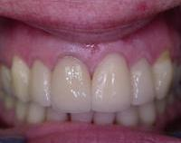
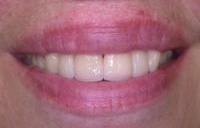

Many people with a "gummy smile" often believe it is because they have short teeth. On the contrary, you may have pearly white tooth structure underneath an overgrowth of gum tissue. Dr. Goteiner has performed hundreds of atraumatic procedures to help people show a beautiful smile.
| Before | After |
|---|---|
|
 |
|
 |